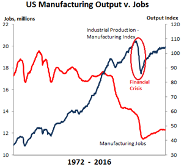

by Carlos Silva 79140 António Lourenço 81796
To manufacturing and beyond.
What if... ?.
The proposed scenario for the “what if” situation envisions a future where the concept of Industry 4.0 is taken to its maximum potential, with factories transforming into an “ecosystem” of machines, where every single piece of machinery is connected to a factory-wide grid which would create a network controlled by a management system. This scenario then implies a full-blown automation throughout the manufacturing business, technologies like robotics, machine learning and 3D printing would become regular sights in a factory.
Everything could be done faster, safer and with a higher quality by a machine, lowering or even disposing human work. The purchase of resources for machines to use and the cost of operating them would be the main costs associated to manufacturing, being these elements the main competitive pillars of the industry.
In this new paradigm, realities like 3D printing a car, or even cells, would become a common thing. This opens possibilities for other methodologies like machine learning, where algorithms would be programmed into the machines to collect data about the production methods and use that same information to come up with better and more efficient ways of doing the same amount of work, offering continuous improvement. The introduction of 3D printing at this scale also brings the interesting theme of microfactories. An example would be a small business that needs circuits to build some kind of hardware no longer would have to contact a supplier, sometimes from the other side of the world, to get what they need. Instead, they could just download the schematics and 3D print the circuit board.
At what consequences?
The emancipation of AI and robotics leads to a decrease in jobs for factory workers since these tasks are now being performed by robots. Analysts suggest that this drop is likely to continue as companies continue to seek to diminish their costs by moving their companies to overseas and by purchasing new technology that is becoming increasingly inexpensive over the years.
As for microfactories we should still expect the existence of large industrial complexes, however, the ability to produce locally small quantities of a specific good allows new players to penetrate the market more easily which translates into an increase of competition alongside with the development of IT technologies. This is expected to greatly boost the IoT industry as developers no longer need to place exorbitant orders with exorbitant delivery times for Chinese factories.
On the other hand, these scenarios have a tendency to bring the price of the final products down as it is now less expensive to produce these goods and, since most of them suffer of great price elasticity, this translates into an increase on consumption and revenue for the manufacturers.
Concepts Definition
Industry 4.0 -Industry 4.0 Trend of automation and data exchange in manufacturing technologies. It includes cyber-physical systems, the Internet of things, cloud computing and cognitive computing.
Automation - Technology by which a process or procedure is performed without human assistance.
Smart Manufacturing - Broad category of manufacturing with the goal of optimizing concept generation, production, and product transaction.
3D Printing - Processes in which material is joined or solidified under computer control to create a three-dimensional object, with material being added together..
Machine Learning - Field of computer science in regards of the computer’s ability to learn.
Robotics - Branch of science responsible for the design, construction, operation, and use of robots.
Industrial Connectivity - Includes any component that is in the path of delivering power or control signals to do useful work.
Microfactories - Small dimension factory able to produce small dimension products. The main advantages are to save resources like space, energy, materials and time.
Operation Costs - Expenses associated with the maintenance and administration of a business on a day-to-day basis.
Competitive Advantage - Virtual reality allowing the creation and test of products simulating the design process without wasting materials.